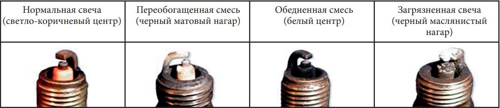
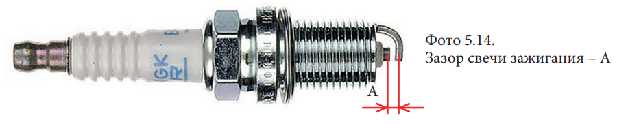

Осмотр и замена свечи зажигания
- Снимите
колпачок
1 высоковольтного провода со свечи зажигания
2
- Удалите загрязнения вокруг
свечи зажигания
и из свечного колодца любым удобным способом. Например, продуйте свечной
колодец сжатым воздухом
- Выкрутите
свечу зажигания
при помощи свечного ключа соответствующего размера
- Ориентируясь на
фото
оцените состояние свечи. Если используется новая свеча, необходимо совершить пробную поездку
до проведения проверки. На проявление цвета потребуется некоторое время
- Если свеча имеет нормальный цвет, переходите к шагу 7. Если свеча загрязнена, перейдите к шагу 6
- Если свеча замаслена или на ней отложились продукты сгорания, и нет возможности заменить ее на месте, можно попробовать
ее очистить. Например, прокалить на открытом огне (в другом помещении) или воспользоваться растворителем с высокой
температурой возгорания. В крайнем случае, можно также использовать щетку из мягкой проволоки или похожий инструмент
- Осмотрите электроды на предмет износа и отложений, уплотнительную шайбу на предмет повреждений и изоляцию на предмет трещин. При обнаружении неисправностей произведите замену
- Проверьте
зазор
«А» между электродами с помощью проволочного щупа. Если зазор не соответствует требованиям,
замените свечу на новую. Рекомендованный зазор: 0,6–0,7 мм
- Перед установкой свечи на место, убедитесь в том, что резьба свечи очищена от грязи. Чтобы избежать перекоса/повреждения резьбы, вкрутите свечу на место вручную
- Используйте свечной ключ соответствующего размера, чтобы надежно затянуть свечу зажигания
- Установите
колпачок
1 высоковольтного провода на свечу зажигания
2